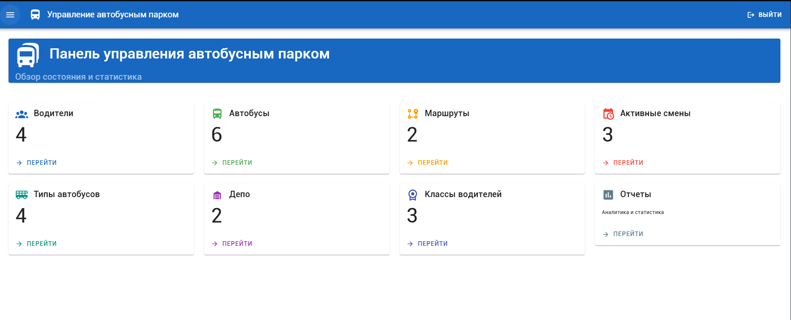
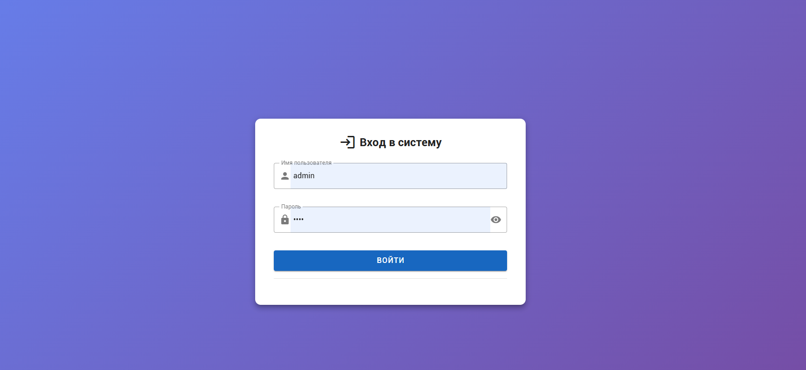
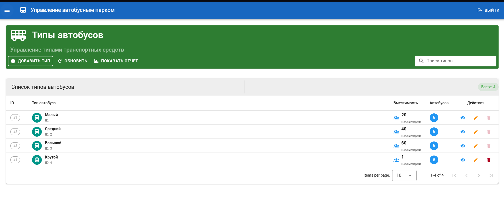
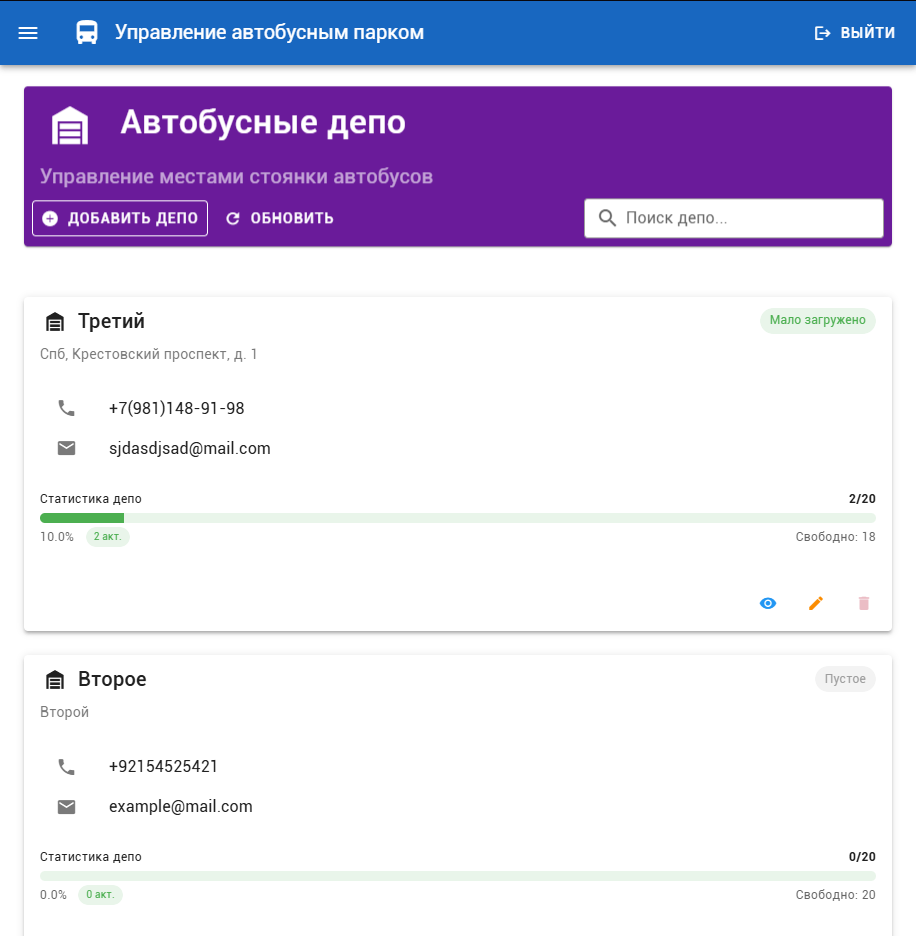
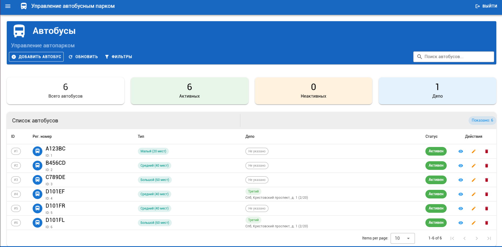
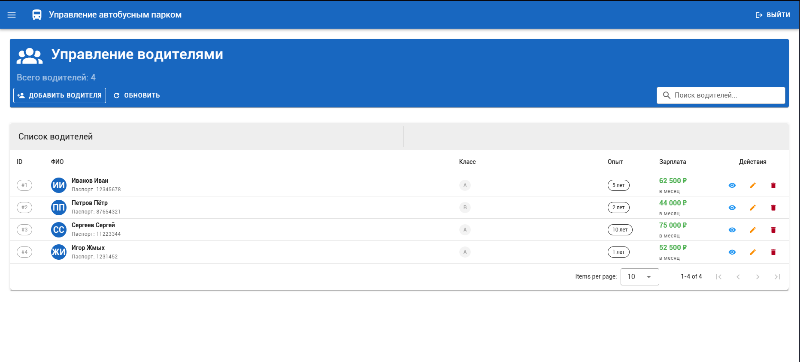
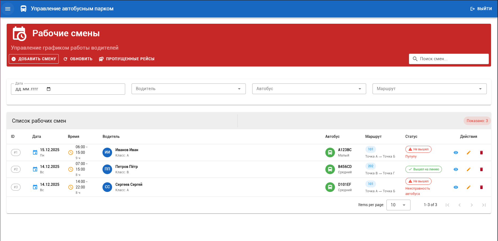
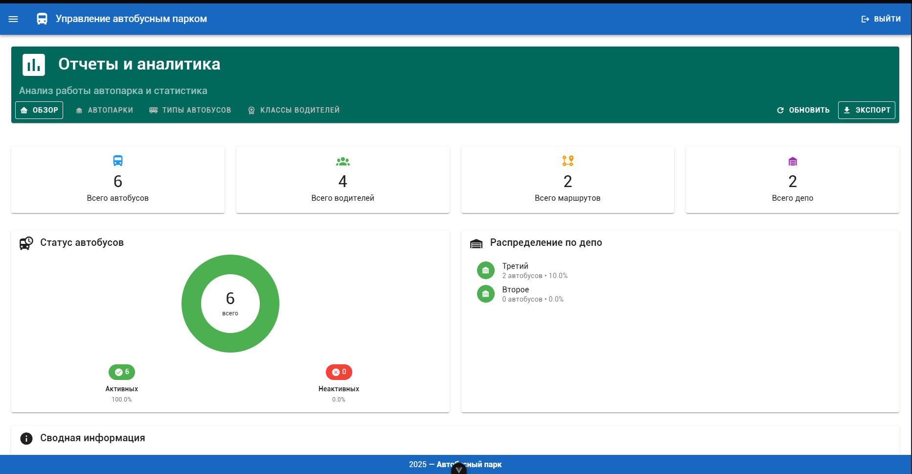

Лабораторная работа 4¶
Реализация клиентской части приложения средствами vue.js.¶
Цель: овладеть практическими навыками и умениями реализации web-сервисов средствами Vue.js.
Практическое задание: Реализовать сайт, используя фреймворк Vue.js, Django REST Framework, Djoser и СУБД PostgreSQL *, в соответствии с вариантом задания лабораторной работы.
Вариант: 9
Создать программную систему, предназначенную для диспетчера автобусного парка частной транспортной фирмы. Фима обслуживает несколько коммерческих маршрутов. Такая система должна обеспечивать хранение сведений о водителях, о маршрутах и характеристиках автобусов. Каждый водитель характеризуется паспортными данными, классом, стажем работы и окладом, причем оклад зависит от класса и стажа работы. Маршрут автобуса характеризуется номером маршрута, названием начального и конечного пункта движения, временем начала и конца движения, интервалом движения и протяженностью в минутах (время движения от кольца до кольца). Характеристиками автобуса являются: номер государственной регистрации автобуса, его тип и вместимость, причем вместимость автобуса зависит от его типа. Каждый водитель закреплен за определенным автобусом и работает на определенном маршруте, но в случае поломки своего автобуса или болезни другого водителя может пересесть на другую машину. В базе должен храниться график работы водителей. Необходимо предусмотреть возможность корректировки БД в случаях поступления на работу нового водителя, списания старого автобуса, введения нового маршрута или изменения старого и т.п.
Диспетчеру автопарка могут потребоваться следующие сведения:
Список водителей, работающих на определенном маршруте с указанием графика их работы?
Когда начинается и заканчивается движение автобусов на каждом маршруте?
Какова общая протяженность маршрутов, обслуживаемых автопарком?
Какие автобусы не вышли на линию в заданный день и по какой причине (неисправность, отсутствие водителя)?
Сколько водителей каждого класса работает в автопарке?
Необходимо предусмотреть возможность выдачи отчета по автопарку, сгруппированного по типам автобусов, с указанием маршрутов, обслуживаемых автобусами каждого типа. Для маршрутов должны быть указаны все характеристики, включая списки автобусов и водителей, обслуживающих каждый маршрут. Отчет должен содержать сведения о суммарной протяженности обслуживаемых маршрутов, о количестве имеющихся в автопарке автобусов каждого типа, о количестве водителей, их среднем возрасте и стаже.
Выполнение работы¶
Общая информация¶
Фронтенд приложения реализован с использованием Vue.js 3 и Vuetify для создания современного пользовательского интерфейса. Приложение предоставляет интерактивные инструменты для управления автобусным депо и аналитики.
Основные компоненты¶
-
Главная (Dashboard.vue): Назначение: Центральный хаб с навигацией и ключевой статистикой 
-
Логин (Login.vue):
 -
BusTypesView (Типы автобусов)
Назначение: Управление типами транспортных средств
Ключевые возможности: - CRUD операции с типами автобусов
- Интегрированный отчет по автопарку
- Валидация при создании/редактировании
- Проверка использования типов перед удалением
- Поиск и фильтрация

-
DepotsView (Автобусные депо) Назначение: Управление местами стоянки и обслуживания автобусов
Ключевые возможности: -
Управление депо (создание, редактирование, удаление)
-
Визуализация загруженности депо
-
Контактная информация депо
-
Статистика по активным/неактивным автобусам

- RoutesView (Маршруты)
Назначение: Управление маршрутами движения автобусов
Ключевые возможности: -
Полное управление маршрутами
-
Расчет расписания движения
-
Интеграция с графиком водителей
-
Статистика по протяженности маршрутов

-
BusesView (Автобусы)
Назначение: Управление автопарком
Ключевые возможности: -
Управление автобусами (добавление, редактирование, удаление)
-
Фильтрация по типу, депо и статусу
-
Статистика по активным/неактивным автобусам
-
Интеграция с типами автобусов и депо

-
DriversView (Водители)
Назначение: Управление персоналом (водителями)
Ключевые возможности: -
Управление водителями (CRUD операции)
-
Интеграция с классами водителей
-
Расчет зарплаты на основе опыта и класса
-
Управление паспортными данными

-
WorkShiftsView (Рабочие смены) Назначение: Управление графиком работы водителей
Ключевые возможности: -
Управление рабочими сменами
- Отслеживание пропущенных рейсов
- Проверка конфликтов в расписании
- Интеграция с водителями, автобусами и маршрутами

-
ReportsView (Отчеты и аналитика)
Назначение: Анализ работы автопарка и статистика
Ключевые возможности: -
Комплексная аналитика по всем модулям
- Визуализация данных (графики, диаграммы)
- Экспорт отчетов в JSON
- Фильтрация по периодам

Endpoints¶
| Endpoint | Метод | Описание | Основные операции |
|---|---|---|---|
| /bus-types/ | GET, POST, PUT, DELETE | Управление типами автобусов | Создание, чтение, обновление, удаление типов транспортных средств |
| /depots/ | GET, POST, PUT, DELETE | Управление автобусными депо | Управление местами стоянки и обслуживания автобусов |
| /routes/ | GET, POST, PUT, DELETE | Управление маршрутами | Управление маршрутами движения автобусов |
| /buses/ | GET, POST, PUT, DELETE | Управление автобусами | Управление транспортными средствами автопарка |
| /drivers/ | GET, POST, PUT, DELETE | Управление водителями | Управление персоналом (водителями) |
| /driverclasses/ | GET, POST, PUT, DELETE | Классы водителей | Управление квалификационными категориями водителей |
| /workshifts/ | GET, POST, PUT, DELETE | Рабочие смены | Управление графиком работы водителей |
| Endpoint | Метод | Описание | Назначение |
|---|---|---|---|
| /bus-types/report/ | GET | Отчет по типам автобусов | Статистика по типам с количеством автобусов, маршрутов и водителей |
| /bus-types/{id}/ | GET | Детальная информация о типе | Получение полной информации о конкретном типе |
| /depots/{id}/ | GET | Информация о конкретном депо | Детальная информация о депо с контактами |
| /depots/{id}/statistics/ | GET | Статистика депо | Статистика загруженности, активных автобусов |
| /depots/summary/ | GET | Сводка по депо | Общая статистика по всем депо |
| /routes/total_duration/ | GET | Общая протяженность маршрутов | Расчет общей длины всех маршрутов |
| /routes/{id}/ | GET | Детальная информация о маршруте | Полная информация о маршруте |
| /routes/{id}/schedule/ | GET | Расписание маршрута | Детальное расписание движения по маршруту |
| /routes/{id}/drivers_schedule/ | GET | График водителей на маршруте | Информация о водителях, работающих на маршруте |
| /buses/?bus_type={id} | GET | Фильтрация автобусов по типу | Получение автобусов определенного типа |
| /buses/?depot={id} | GET | Фильтрация автобусов по депо | Получение автобусов в конкретном депо |
| /buses/{id}/ | GET | Информация об автобусе | Детальная информация о конкретном автобусе |
| /drivers/{id}/ | GET | Информация о водителе | Полная информация о конкретном водителе |
| /driverclasses/statistics/ | GET | Статистика по классам водителей | Распределение водителей по классам |
| /workshifts/missed/ | GET | Пропущенные рейсы | Отчет по пропущенным рейсам за определенную дату |
| /workshifts/?date={date} | GET | Фильтрация смен по дате | Получение смен на конкретную дату |
| /workshifts/?driver_id={id} | GET | Фильтрация смен по водителю | Получение смен конкретного водителя |
| /workshifts/?bus_id={id} | GET | Фильтрация смен по автобусу | Получение смен конкретного автобуса |
| /workshifts/?route_id={id} | GET | Фильтрация смен по маршруту | Получение смен на конкретном маршруте |